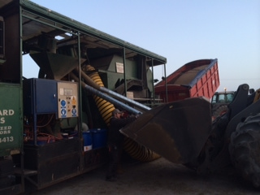
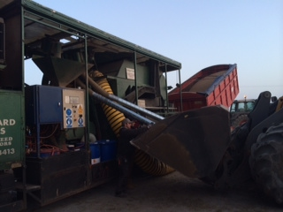

Seeds sales and advice on varieties are available from all Haggard Stores agronomists. Through a network of suppliers,Goldcrop, Seedtech and Germinal Seeds, the company is able to supply a complete range of seeds for all arable combinable crops and many others including energy and fodder crops, maize, environmental mixes and grassland. Our fleet of high output mobile seed processing units and highly skilled operators clean and dress farm saved seed using state of the art gravity selection leave you with an extremely high quality sample ready for sowing. All of our mobile seed cleaners are equipped with the very best seed treatment units which are supplied and maintained by the world’s leading crop protection specialists; Basf. This ensures your farm saved seed is coated evenly and accurately with the very best products available. Our mobile seed cleaner operators are experienced and skilled in what they do and trained to process your farm saved seeds as quickly and accurately as possible and leave behind them clean and tidy yards. We take great pride in the service we are able to offer and value the loyal customer base we have been able to build up through years of providing quality seed processing and seed dressing services. Our mobile seed processing support vehicles are normally also carrying additional products such as sampling and measurement equipment, temperature spears, moisture meters etc. If there is something you need for your farm, let us know and we’ll ask our mobile seed cleaner operators to bring it with them. Mobile seed processing should be a simple process that involves good initial communication between farmer and processor to ensure that the whole operation passes as seamlessly as possible. This is the standard every time an Haggard Seeds mobile seed processing unit arrives on a farm.

If your harvested crop fails to live up to the expectations of the buyer then we can provide a solution with one of our three types of bulk cleaning machines. Reduce screenings in malting barleyFor example we can:
 

We also offer the grower the option to do a germination test in our laboratory or seed can be collected and sent to the Department of Agriculture labs in Celbridge. The object of the germination test is to the determine the maximum germination potential of a seed lot. This information can be used to compare the quality of different lots and also estimate the field planting value of a seed lot. Laboratory tests aim to control the environment in order to give the most regular, rapid and complete germination for the majority of samples of a particular species. Germination of a seed in a laboratory test is defined as the emergence and development of the seedling to a stage where the aspect of its essential structures indicates whether or not it is able to develop further into a satisfactory plant under favourable conditions in the field.